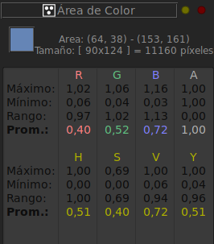
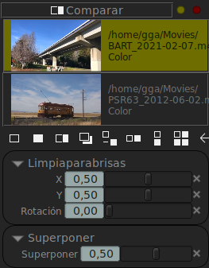
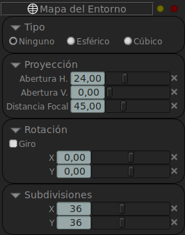
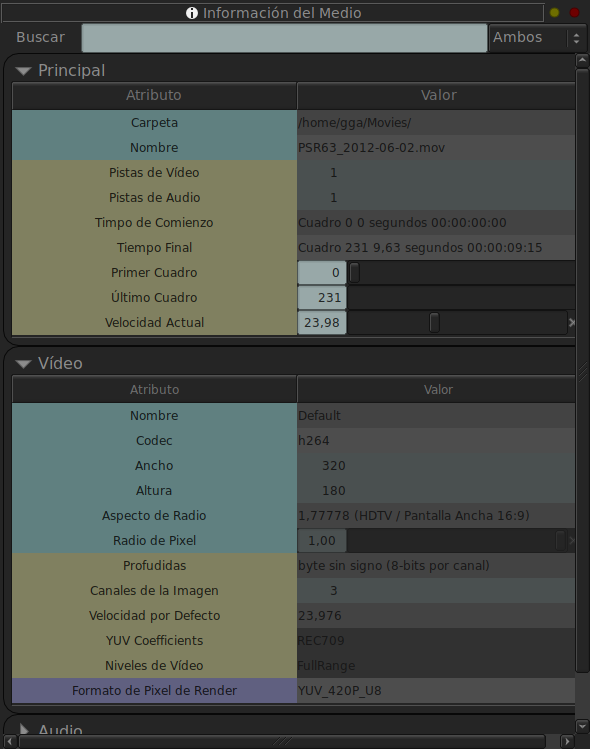
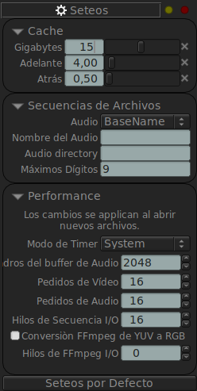
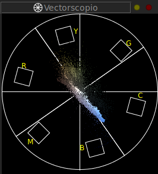

Paneles
Panel de Anotaciones

El Panel de Anotaciones te permite controlar el Texto, Bocetos y Notas. Podés seleccionar una Tipografía para usar con la herrameinta de Texto. Podes elegir un pincel duro o suave para las herramientas de dibujo. Y podes dibujar bocetos Laser, de forma que no son permanentes y en cambio se desvanecen en segundos.
Podrás controlar también el comportamiento del fantasma de todas las anotaciones y seleccionar si la anotación será dibujada en cuadro actual o en todos los cuadros.
Finalmente, podés escribir en la sección de Notas que serán impresas junto a la imagen si grabás un archivo PDF.
Panel de Área de Color
El Panel de Área de Color permite comparar una selección rectangular de la imagen para mostrar sus valores de color, mínimo, máximo y promedio. La Selección del área se realiza con la Herramienta de Seleccion en la Barra de Herramientas de Dibujo y Acción (segundo ícono desde arriba).
Panel de Color

El Panel de Color (F6 por defecto) permite controlar el display de color de la ventana gráfica. Permite modificar la Suma, Contraste, Saturación y Tinte. Podés Invertir la imagen y setear los Niveles de In/Out (Entrada y Salida) y Gama. Podés agregar también un LUT predefinido a ejecutarse antes o después de los cambios de color.
Panel de Comparar
El Panel de Comparar es similar al Panel de Archivos, pero permite seleccionar multiples clips para comparar. Podes mostrar la imagen A (Panel de Archivos), la imagen B (La primer imagen del Panel de Comparar), Limpiaparabrisas (Wipe), Superponer (usando un canal de alfa si está presente), Diferencia, Horizontal, Vertical y Mosaicos. La comparación de Mosaicos permite que muchas imágenes se muestren en mosaico.
Panel de Mapa de Entorno
El Panel de Mapa de Entorno te permite mostrar la imagen el la ventana gráfica como un mapa de entorno (Esférico o Cúbico). Te permite rotar la vista con el botón del medio del ratón en la ventana gráfica y cambiar la Distancia focal con el botón izquierdo del ratón.
Panel de Archivos

El Panel de Archivos (F4 by default) muestra todos los clips cargados. Tiene siete botones abajo para Agregar un Nuevo Archivo, Cargar un Nuevo Archivo con Audio, Cerrar el Archivo Seleccionado, Cerrar Todos los Archivos, Cambiar al clip Previos o Siguiente y filtrar las Listas de Reproducción (EDL) del Panel de Archivos.
Panel de Histograma

El Panel de Histograma permite mostrar un histograma del área seleccionada de la imagen. Podés seleccionar el área con la Herramienta de Selección en la Barra de Herramientas donde las herramientas de dibujo están localizadas.
Panel de Bitácora

El Panel de Bitácora registra todos los mensajes importantes que mrv2 emite. Al comienzo, mostrará un mensaje de arranque para mostrar de donde todos los archivos de configuración provienen (Preferencias, Teclas de Manejo, Mapeo de Carpetas, Configuración OCIO, etc). Mostrará tembién cualquier error que ocurra durante la operación de mrv2.
El comportamiento de la Ventana->Preferencias->Errores de la Bitácora puede ser cambiado cuando un error ocurre. El comportamiento por defecto es abrir la bitácora en una ventana, pero podés también abrirla en un panel empotrado o podés ignore los errores y nunca abrir la bitácora automaticamente.
Panel de Información del Medio
El Panel de Información del Meida Media Information Panel es el caballo de batalla para mostrar todos los datos del clip seleccionado. Muestra todas las capas, pistas de audio, codecs, niveles, rango de cuadros, etc. asi como toda la metadata.
Panel de Red

El Panel de Red permite comenzar una session en sincronismo entre dos o más maquinas. Para que funcione, debe setear una máquina como el servidor y las otras como clientes que se conectan a dicha máquina. Las máquinas son distinguidas por su dirección IPv4 o IPv6 o por su nombre de alias si utiliza un archivo «hosts» en su sistema operativo. Además de la máquina, tiene que especificar un número de puerto para conectarse, pero el puerto por defecto (55150) debería estar bien.
Para que la conección se lleve a cabo, deberá asegurarse que su cortafuegos permte conecciones entrantes y salientes en el port establecido.
Panel de Lista de Reproducción

El panel de Lista de Reproducción permite crear rápidamente Listas de Reproducción de OpenTimelineIO (tambien conocido como EDLs) agregando varios clips del Panel de Archivos. Esto se hace llevando sin soltar el botón izquierdo del ratón en el archivo del Panel de Archivos y moviendo el raton al Panel de Lista de Reproducción o a la ventana gráfica de la Línea de Tiempo, cuando la lista de reproducción del EDL está seleccionado. Note que tiene que seleccionar el EDL en el Panel de Archivos o en el Panel de Lista de Reproducción.
Los clips no tienen que tener la misma resolución o FPS, pero deben tener la misma cantidad de pistas de video y audio. Actualmente sólo una pista de video y audio es permitida.
Los EDLs pueden ser creados incluso en una conección de red, asumiendo que todos los clips existen y pueden ser accedidos por todas las máquinas.
Cada medio que es agregado a la lista de reproducción puede tener un punto de Entrada y Salida para seleccionar solo una porción del clip y el clip puede aparecer multiples veces con differentes puntos de Entrada y Salida.
Panel de Python

El Panel de Python permite correr código de Python con la API Python de mrv2 para controlar el reproductor. El Panel está dividido en dos secciones. La sección de arriba graba el output de python, mientras que la sección de abajo es donde tipea su código. Para correr el código puede ejecutarlo de los menúes o bien con Entrar en el teclado numérico.
Puede también seleccionar una porción del codigo en el editor para correrla en vez de todo el código presente en el editor.
Puede grabar el código o cargarlo en disco, para una facil interacción con el mismo.
Panel de Seteos
El Panel de Seteos (Tecla por defecto: F9) permite principalmente configurar el comportamiento del Cache de mrv2. En él puede controlar cuanta memoria en Gigabytes usa el cache, o, si setea el control de Gigabytes a 0, en vez de Gigabytes, los seteos de Adelante y Atrás controlaran el cacheo basado en segundos.
El seteo por defecto de Gigabytes es usar como máximo la mitad de tu RAM disponible.
Panel de Estéreo 3D

El Panel de Estéreo 3D permite mostrar imágenes 3D. Podés seleccionar un clip en Panel de Archivos y un clip en el Panel de Stereo y seleccionar el tipo de Entrada y Salida que quiere. Si usa imágenes EXR con capas left/right, puede seleccionar la imagen como Entrada y la imagen del Panel de Archivo y el de Esteror serán seleccionadas automáticamente. La Salida para Estereo 3D actualemente puede ser: Anáglifo, Cuadriculado, Líneas o Columnas.
Panel de USD

El Panel de USD permite control la calidad y display de los activos de USD que se van a cargar.
Panel de Vectorscopio
El Panel de Vectorscopio permite mostrar un vectorscopio del area seleccionada de la imagen. Podés seleccionar el área con la Herramienta de Selección en la Barra de Herramientas donde las herramientas de dibujo están localizadas.